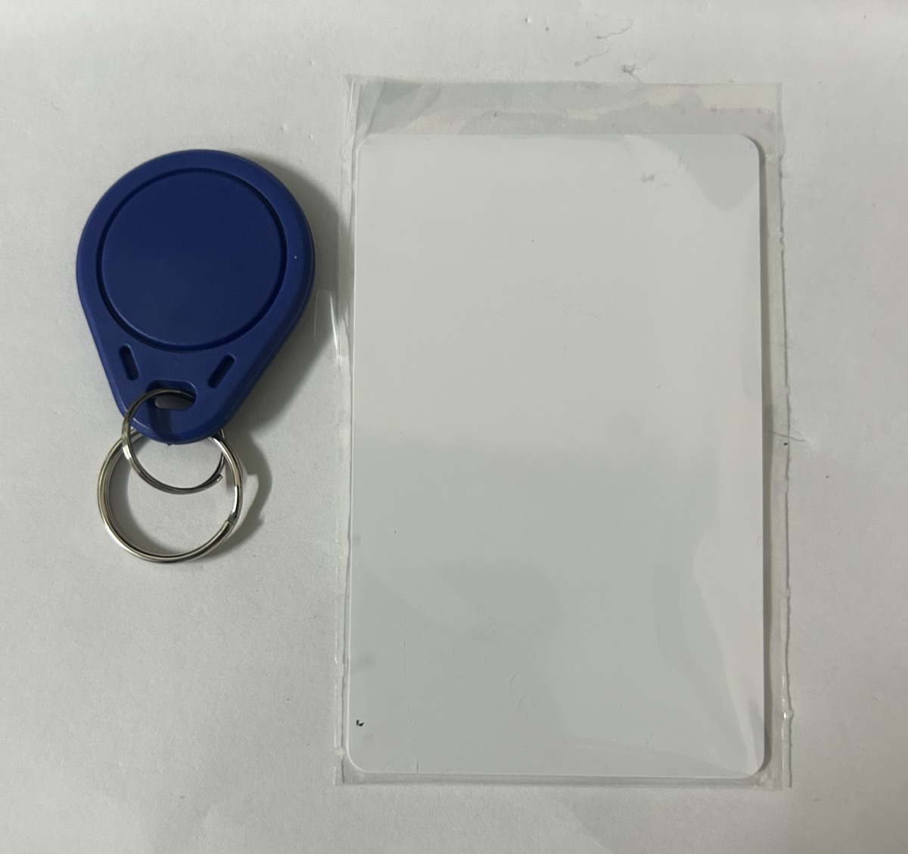
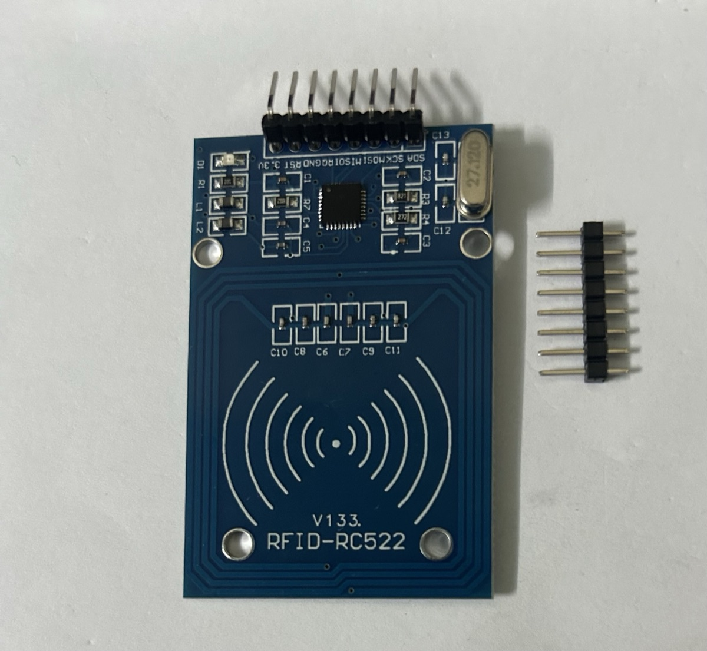
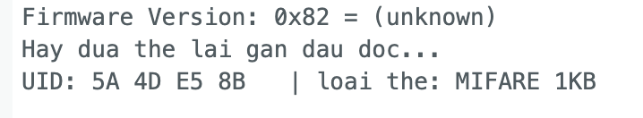

Lab 10 · RFID: module RC522 + thẻ MIFARE Classic 1K
Lab 10 · RFID: module RC522 + thẻ MIFARE Classic 1K
Dùng module RC522 với Arduino Uno để đọc thẻ RFID 13,56 MHz trong kit (thẻ trắng và móc khóa). Lab đi từ đọc mã UID của thẻ, sang đọc/ghi dữ liệu vào bộ nhớ thẻ, và cuối cùng ghép thành khóa cửa quẹt thẻ: thẻ hợp lệ thì servo mở khóa, đèn xanh và còi kêu một tiếng; thẻ lạ thì đèn đỏ và còi kêu ba tiếng. Đây cũng là lab đầu tiên dùng giao tiếp SPI.
RFID là gì
RFID (Radio Frequency Identification) là nhận dạng bằng sóng vô tuyến. Một hệ RFID có hai phần:
| Đầu đọc (reader) | Thẻ (tag) | |
|---|---|---|
| Trong lab | Module RC522 | Thẻ trắng |
| Nguồn điện | Lấy từ Arduino | Không có pin (thẻ thụ động) |
| Thành phần | Chip MFRC522 + anten in trên mạch | Chip nhỏ + cuộn dây anten bên trong vỏ nhựa |
Thẻ không có pin, vậy lấy điện ở đâu? Anten của đầu đọc tạo ra một từ trường xoay chiều 13,56 MHz. Khi đưa thẻ lại gần, cuộn dây trong thẻ nằm trong từ trường này và sinh ra dòng điện cảm ứng (giống máy biến áp không có lõi), đủ để nuôi chip trong thẻ. Chip trả lời bằng cách thay đổi tải trên cuộn dây của mình, đầu đọc nhận ra thay đổi đó thành dữ liệu.
Vì năng lượng truyền bằng cảm ứng nên tầm đọc rất ngắn, chỉ khoảng 0–5 cm với RC522. Đây là điểm cố ý của chuẩn 13,56 MHz: thẻ phải chạm gần mới đọc được, nên khó bị đọc trộm từ xa.
Các dải tần RFID
| Dải tần | Tầm đọc | Ví dụ |
|---|---|---|
| LF 125 kHz | ~10 cm | Thẻ chấm công, thẻ thang máy đời cũ (EM4100). Chỉ có mã số, không ghi được |
| HF 13,56 MHz | ~0–10 cm | Thẻ trong lab (MIFARE), thẻ xe buýt, thẻ ngân hàng không chạm, NFC trên điện thoại, CCCD gắn chip |
| UHF 860–960 MHz | 1–10 m | Tem hàng hóa trong kho, thu phí không dừng (ETC) |
RC522 chỉ đọc dải 13,56 MHz theo chuẩn ISO/IEC 14443A. Thẻ 125 kHz (thẻ chấm công dày, thường in số trên mặt) không đọc được bằng RC522.
NFC trên điện thoại là một nhánh của RFID 13,56 MHz. Điện thoại Android có NFC đọc được thẻ trong kit bằng app như NFC Tools hay MIFARE Classic Tool, tiện để kiểm tra chéo kết quả ở Phần A.
Thẻ MIFARE Classic 1K
Thẻ trắng trong kit là MIFARE Classic 1K (còn gọi là S50), loại thẻ 13,56 MHz phổ biến nhất. (Móc khóa đi kèm thì RC522 không đọc được, xem Test A1.)
UID
Mỗi thẻ có một UID (Unique Identifier) dài 4 byte, ghi sẵn từ nhà máy, ví dụ A3 5F 1C 0B. Phần A chỉ đọc UID này. Đa số hệ thống gửi xe, khóa cửa giá rẻ chỉ dựa vào UID để nhận thẻ.
⚠️ UID không phải là bí mật: bất kỳ đầu đọc nào cũng đọc được, và có loại thẻ “magic” (thẻ UID đổi được) cho phép chép UID sang thẻ khác. Hệ thống dùng UID làm khóa cửa (như Phần C) chỉ phù hợp cho mục đích học tập hoặc độ an toàn thấp.
Bộ nhớ: 16 sector × 4 block × 16 byte
Bộ nhớ 1 KB (1024 byte) chia thành 16 sector, mỗi sector có 4 block, mỗi block 16 byte. Block được đánh số liên tục từ 0 đến 63:
Sector 0 block 0 [UID + dữ liệu nhà sản xuất] ← chỉ đọc
block 1 [dữ liệu]
block 2 [dữ liệu]
block 3 [Key A | Access bits | Key B] ← sector trailer
Sector 1 block 4 [dữ liệu] ← Phần B ghi vào đây
block 5 [dữ liệu]
block 6 [dữ liệu]
block 7 [Key A | Access bits | Key B] ← sector trailer
...
Sector 15 block 60–62 [dữ liệu], block 63 [trailer]- Block 0 chứa UID, khóa cứng từ nhà máy, không ghi được.
- Block cuối của mỗi sector (3, 7, 11, …, 63) là sector trailer: chứa hai khóa Key A, Key B (6 byte mỗi khóa) và các access bits quy định ai được đọc/ghi block nào.
- Còn lại 47 block dữ liệu (16 sector × 3 block − block 0), tổng cộng 752 byte ghi được.
Xác thực trước khi đọc/ghi
Muốn đọc hoặc ghi một block, đầu đọc phải xác thực (authenticate) với sector chứa block đó bằng Key A hoặc Key B. Thẻ mới xuất xưởng có cả hai khóa là FF FF FF FF FF FF, nên code trong lab dùng khóa này.
⚠️ Không ghi vào sector trailer (block 3, 7, 11, …) khi chưa hiểu rõ access bits. Ghi sai access bits hoặc quên khóa mới là khóa vĩnh viễn cả sector đó, không có cách mở lại. Code Phần B chặn sẵn việc ghi vào trailer.
Thuật toán mã hóa của MIFARE Classic (Crypto1) đã bị bẻ khóa từ năm 2008, nên thẻ này không an toàn cho thanh toán hay kiểm soát ra vào quan trọng. Hệ thống mới dùng MIFARE DESFire hoặc MIFARE Plus với mã hóa AES.
Module RC522

RFID-RC522 (bản V133) cùng hai hàng chân 8 pin chưa hàn: một hàng thẳng, một hàng cong 90°Bộ RFID trong kit gồm:
- Module
RFID-RC522(inV133trên mạch), mạch xanh dương:- Nửa dưới là anten in trên mạch: đường đồng chạy vòng quanh mép, bên trong in hình sóng radio. Đây là chỗ đặt thẻ.
- Nửa trên là chip MFRC522 (con chip vuông 32 chân ở giữa), thạch anh
27.120MHz (vỏ kim loại bên phải, đúng bằng 2 × 13,56 MHz), một LED nguồnD1ở góc trái và hàng 8 lỗ chân dọc mép trên.
- Hai hàng chân 8 pin (pin header) để rời: một hàng thẳng, một hàng cong 90°. Module bán ra chưa hàn chân, chỉ dùng một trong hai hàng (xem Hàn chân header).
- Thẻ trắng cỡ thẻ ATM và móc khóa xanh dương (keyfob). Thẻ trắng là MIFARE Classic 1K 13,56 MHz. Móc khóa trong kit thì RC522 không đọc được (đã thử ở Test A1), nhiều khả năng là loại 125 kHz dù vỏ giống hệt loại 13,56 MHz.

Thẻ không cần bóc túi nilon để đọc, sóng đi xuyên qua nilon dễ dàng (và qua cả ví, vỏ điện thoại bằng nhựa).
8 chân, nhãn in ngay dưới hàng lỗ. Nhìn mặt có linh kiện, anten ở dưới, hàng lỗ ở trên: nhãn bị in lộn ngược, đọc từ phải sang trái là SDA · SCK · MOSI · MISO · IRQ · GND · RST · 3.3V. Nói cách khác, SDA là chân sát thạch anh (lỗ có pad vuông, chân số 1), 3.3V là chân sát LED D1. Hai chân dễ cắm nhầm nhất, GND và 3.3V, nằm ở đầu phía LED.
phía LED D1 phía thạch anh
3.3V RST GND IRQ MISO MOSI SCK SDA ■ (■ = pad vuông, chân 1)
○ ○ ○ ○ ○ ○ ○ □
┌─────────────────────────────────────────────┐
│ D1 chip MFRC522 27.120 │
│ │
│ ~~~ anten ~~~ │
└─────────────────────────────────────────────┘Bảng chức năng và cách nối:
| Chân | Chức năng | Nối vào Uno |
|---|---|---|
SDA |
Chọn chip SPI (SS / CS). Tên SDA vì chip cũng hỗ trợ I²C, nhưng module nối sẵn để chạy SPI |
D10 |
SCK |
Xung nhịp SPI | D13 |
MOSI |
Dữ liệu Uno → RC522 | D11 |
MISO |
Dữ liệu RC522 → Uno | D12 |
IRQ |
Báo ngắt | Không nối |
GND |
Mass | GND |
RST |
Reset chip | D9 |
3.3V |
Nguồn | 3.3V |
| Thông số | RC522 |
|---|---|
| Điện áp nguồn | 3,3 V |
| Dòng tiêu thụ | 13–26 mA khi đọc |
| Tần số | 13,56 MHz |
| Chuẩn thẻ | ISO/IEC 14443A (MIFARE Classic, Ultralight, NTAG…) |
| Tầm đọc | 0–5 cm (thẻ), ngắn hơn với móc khóa |
| Giao tiếp | SPI (tới 10 Mbit/s), I²C, UART. Module nối sẵn cho SPI |
⚠️ Nguồn của RC522 là 3,3 V, không phải 5 V. Cắm 3.3V của module vào 5V của Uno có thể làm hỏng chip. Đây là module đầu tiên trong kit cần chú ý điều này.
Còn các chân tín hiệu (SCK, MOSI, SDA, RST) thì nhận mức 5 V từ Uno. Datasheet MFRC522 không ghi là chịu được 5 V, nhưng nối thẳng như trên là cách làm phổ biến và chạy ổn trong thực tế. Muốn đúng chuẩn thì đặt module chuyển mức logic (logic level shifter) 5 V ↔︎ 3,3 V ở giữa. Chiều ngược lại, MISO ra mức 3,3 V, Uno vẫn đọc là HIGH (ngưỡng ~3 V, xem bảng điện áp ở Lab 8).
Hàn chân header
Module bán ra chưa có chân. Phải hàn chứ không cắm hờ dây vào lỗ được: tiếp xúc lỏng làm SPI lúc chạy lúc không, Serial báo 0x00 / 0xFF và rất khó tìm ra lỗi.
Chọn hàng chân nào?
| Hàng cong 90° (khuyên dùng) | Hàng thẳng | |
|---|---|---|
| Sau khi hàn | Chân chĩa ngang ra ngoài mép, song song mặt mạch | Chân chĩa thẳng xuống dưới mặt mạch |
| Cách dùng | Module nằm phẳng trên bàn, nối Uno bằng dây đực – cái | Cắm module nằm sấp lên breadboard |
| Ưu điểm | Mặt anten luôn ngửa lên, đặt thẻ lên dễ; breadboard trống cho LED, buzzer, servo | Không cần dây đực – cái, cắm vào là xong |
| Nhược điểm | Cần 7 dây đực – cái | Module che mất ~8 hàng breadboard; mặt có linh kiện úp xuống, nhưng vẫn đặt thẻ ở mặt trên được |
Lab này dùng hàng cong 90°, giống ảnh dưới:

Các bước:
- Đặt hàng chân từ mặt có linh kiện (mặt có nhãn chữ): thanh nhựa đen nằm sát mặt này, đầu chân ngắn xuyên qua lỗ ra mặt sau, đầu cong dài chĩa ra ngoài mép, không chĩa vào trong đè lên chip. Đúng như ảnh trên.
- Cố định hàng chân cho vuông góc mép mạch: kẹp bằng kẹp giấy, dán băng dính giấy, hoặc lật úp module rồi kê đầu chân dài lên một cục tẩy cho mạch nằm cân.
- Lật ra mặt sau, hàn một chân ở đầu (ví dụ
SDA) trước. Nhìn lại: nếu hàng chân bị nghiêng thì vừa chạm mỏ hàn vào mối hàn vừa chỉnh lại cho thẳng. Hàn chân ở đầu kia (3.3V), kiểm tra lần nữa. - Hàn 6 chân còn lại. Mỏ hàn ~320–350 °C, áp mỏ vào cả chân lẫn pad 1–2 giây rồi mới đưa thiếc vào, thiếc tự chảy quanh chân. Tổng thời gian mỗi mối dưới 3–4 giây để không làm bong pad.
- Kiểm tra mối hàn:
- Mối tốt có hình nón nhỏ, bóng, bao kín pad. Mối dạng cục tròn chỉ đậu trên chân, hoặc xám sần là hàn nguội: hàn lại.
- Các chân cách nhau chỉ 2,54 mm: soi kỹ không có thiếc nối hai chân cạnh nhau, nhất là
GND–RST–3.3V. Có cầu thiếc thì kéo mỏ hàn sạch dọc khe giữa hai chân để tách. - Nếu có đồng hồ vạn năng: để chế độ thông mạch (kêu bíp), đo
3.3VvớiGND: không được kêu. Kêu là đang chập, phải sửa trước khi cắm điện.
Chưa có mỏ hàn thì nhờ thầy / phòng lab hàn giúp, hoặc mua module đã hàn sẵn chân (đắt hơn vài nghìn đồng). Cách “chữa cháy” là bẻ chân để cắm nghiêng vào lỗ cho chân tì vào thành lỗ, nhưng chỉ đủ để thử nhanh, không đủ tin cậy cho cả lab.
SPI là gì
Các lab trước đã gặp nhiều cách giao tiếp: digitalRead() một chân (Lab 8), giao thức 1 dây của DHT11 (Lab 3), I²C 2 dây của LCD (Lab 2), dịch bit qua 74HC595 (Lab 7). RC522 dùng SPI (Serial Peripheral Interface): 4 dây, nhanh hơn I²C nhiều.
Uno (master) RC522 (slave)
D13 SCK ───────────────────────▶ SCK xung nhịp, do master tạo
D11 MOSI ───────────────────────▶ MOSI master gửi
D12 MISO ◀─────────────────────── MISO slave trả lời
D10 SS ───────────────────────▶ SDA LOW = "tôi đang nói với bạn"| I²C (LCD, Lab 2) | SPI (RC522) | |
|---|---|---|
| Số dây tín hiệu | 2 (SDA, SCL) |
4 (SCK, MOSI, MISO, SS) |
| Chọn thiết bị | Bằng địa chỉ gửi trên dây | Bằng một chân SS riêng cho mỗi thiết bị |
| Tốc độ thường dùng | 100–400 kbit/s | 1–10 Mbit/s |
| Chân trên Uno | A4, A5 |
Cố định D11, D12, D13; SS chọn tùy ý |
Chân SCK, MOSI, MISO trên Uno cố định vì nối với bộ SPI phần cứng bên trong ATmega328P, không đổi được. Chân SS thì chọn chân digital nào cũng được, lab dùng D10 theo thói quen. Cũng 3 chân này có trên header ICSP 6 chân ở cuối board.
Hệ quả: D13 đã thành SCK, nên LED L trên board sẽ nháy mờ mỗi khi Arduino nói chuyện với RC522. Đó là bình thường, không phải lỗi. Lab này không dùng LED L làm đèn báo.
Linh kiện và chân
| Linh kiện | Số lượng | Ghi chú |
|---|---|---|
| Arduino Uno + cáp USB | 1 | |
| Module RC522 + thẻ trắng + móc khóa | 1 bộ | Đã hàn hàng chân cong 90° (cách hàn) |
| LED xanh lá, LED đỏ + 2 điện trở 220 Ω | 1 bộ | Phần C |
| Buzzer | 1 | Phần C |
| Servo SG90 | 1 | Phần C, làm chốt khóa |
| Breadboard, dây đực – đực, dây đực – cái | Dây đực – cái để nối thẳng vào header RC522 |
Nối dây đầy đủ (Phần A, B chỉ cần RC522):
| Linh kiện | Chân | Nối vào Uno |
|---|---|---|
| RC522 | SDA |
D10 |
| RC522 | SCK |
D13 |
| RC522 | MOSI |
D11 |
| RC522 | MISO |
D12 |
| RC522 | IRQ |
(bỏ trống) |
| RC522 | GND |
GND |
| RC522 | RST |
D9 |
| RC522 | 3.3V |
3.3V |
| LED xanh lá | Chân dài qua 220 Ω | D5 |
| LED đỏ | Chân dài qua 220 Ω | D6 |
| Buzzer | Chân + (dài) |
D7 |
| Servo | Cam (tín hiệu) | D3 |
| Servo | Đỏ | 5V |
| LED, buzzer, servo | Chân âm / nâu | GND |
Giải thích cách chọn chân:
D10–D13dành cho SPI,D9choRST: đây là cách nối mặc định trong ví dụ của thư viện, nên đọc tài liệu trên mạng sẽ khớp.- Servo ở
D3, không phảiD9như Lab 4, vìD9đã làRST. Thư việnServotạo xung trên chân nào cũng được. - Thư viện
Servochiếm Timer1,tone()chiếm Timer2: hai thứ không tranh nhau.D5,D6vẫn dùng bình thường. - RC522 nối
3.3V, các module còn lại nối5V. Không kéo chung một thanh nguồn cho tất cả.
Cài thư viện
Arduino IDE → Tools → Manage Libraries → tìm MFRC522 → cài bản của GithubCommunity (tác giả gốc miguelbalboa), bản 1.4.x.
Thư viện này đã ngừng phát triển nhưng vẫn là bản được dùng nhiều nhất, ví dụ trên mạng gần như đều viết cho nó. Có một bản mới tên MFRC522v2 với cú pháp khác (MFRC522DriverPinSimple, MFRC522DriverSPI…): code trong lab không dùng bản đó, nếu lỡ cài thì gỡ ra để tránh nhầm.
SPI.h có sẵn trong Arduino IDE, không cần cài.
Phần A – Đọc UID của thẻ
Test A1 – kiểm tra module và đọc UID
#include <SPI.h>
#include <MFRC522.h>
#define SS_PIN 10
#define RST_PIN 9
MFRC522 rfid(SS_PIN, RST_PIN);
void setup() {
Serial.begin(9600);
SPI.begin();
rfid.PCD_Init();
delay(10);
rfid.PCD_DumpVersionToSerial(); // in phiên bản chip, để biết đã nối đúng chưa
Serial.println("Hay dua the lai gan dau doc...");
}
void loop() {
// 1. Có thẻ mới trong vùng đọc không?
if (!rfid.PICC_IsNewCardPresent()) return;
// 2. Đọc UID của thẻ đó
if (!rfid.PICC_ReadCardSerial()) return;
Serial.print("UID:");
for (byte i = 0; i < rfid.uid.size; i++) {
Serial.print(rfid.uid.uidByte[i] < 0x10 ? " 0" : " ");
Serial.print(rfid.uid.uidByte[i], HEX);
}
MFRC522::PICC_Type type = rfid.PICC_GetType(rfid.uid.sak);
Serial.print(" | loai the: ");
Serial.println(rfid.PICC_GetTypeName(type));
rfid.PICC_HaltA(); // cho thẻ "ngủ", không đọc lại liên tục
rfid.PCD_StopCrypto1();
}Giải thích:
Thư viện gọi đầu đọc là PCD (Proximity Coupling Device) và thẻ là PICC (Proximity Integrated Circuit Card), theo tên trong chuẩn ISO 14443. Hàm bắt đầu bằng
PCD_làm việc với module,PICC_làm việc với thẻ.PCD_DumpVersionToSerial()đọc thanh ghi phiên bản của chip. Đây là bước kiểm tra dây quan trọng nhất:Serial in Ý nghĩa Firmware Version: 0x92 = v2.0hoặc0x91 = v1.0Chip MFRC522 chính hãng, dây SPI đúng 0x12,0x82,0x88,0xB2…= (unknown)Chip clone, rất hay gặp trên module giá rẻ. Thường vẫn đọc thẻ bình thường. Module trong kit là 0x820x00hoặc0xFFkèmWARNING: Communication failureKhông nói chuyện được với chip: sai dây, chưa hàn header, hoặc chưa cấp nguồn PICC_IsNewCardPresent()gửi lệnh tìm thẻ;PICC_ReadCardSerial()chọn thẻ đó và đọc UID vàorfid.uid. Phải gọi cả hai, theo đúng thứ tự.rfid.uid.sak(Select Acknowledge) là byte thẻ trả về khi được chọn, cho biết loại thẻ.PICC_GetTypeName()đổi ra chữ, ví dụMIFARE 1KB.PICC_HaltA()đưa thẻ vào trạng thái nghỉ. Nếu bỏ dòng này, giữ thẻ trên đầu đọc sẽ không in liên tục mà in xen kẽ, vì thẻ bị chọn lại ở mỗi vòngloop().uidByte[i] < 0x10thêm số0đằng trước để byte0x0Bin ra0Bchứ không phảiB, cho UID luôn đủ 2 ký tự mỗi byte.
Cách kiểm tra: nạp code, mở Serial Monitor (baud 9600). Dòng đầu tiên phải là phiên bản chip (không phải 0x00 / 0xFF). Đặt thẻ trắng phẳng, sát lên mặt anten, rồi đến móc khóa. Kết quả thật trên module trong kit:

Firmware Version: 0x82 = (unknown), sau đó UID: 5A 4D E5 8B | loai the: MIFARE 1KBModule trong kit báo
0x82 = (unknown): chip clone, không phải MFRC522 chính hãng (0x91/0x92). Không có dòngWARNING, và thẻ vẫn đọc bình thường, nên bỏ qua chữunknown.Thẻ được nhận đúng là MIFARE 1KB. UID 4 byte
5A 4D E5 8Blà của thẻ trắng.Móc khóa xanh dương trong kit không đọc được, kể cả khi đặt phẳng, chạm hẳn giữa anten và đã tăng độ nhạy anten lên tối đa (xem dưới). Nhiều khả năng móc khóa là loại 125 kHz (EM4100) có vỏ giống hệt loại 13,56 MHz, mà RC522 không đọc được dải này. Cách kiểm tra: áp móc khóa vào điện thoại Android có NFC; điện thoại không phản ứng (trong khi thẻ trắng thì có) là móc khóa 125 kHz.
Ghi lại UID của các thẻ đọc được, Phần C cần dùng.
Tăng độ nhạy anten. Module clone thường đọc yếu, nhất là với móc khóa có anten nhỏ. Thêm một dòng ngay sau rfid.PCD_Init();:
rfid.PCD_SetAntennaGain(rfid.RxGain_max); // độ nhạy thu tối đa (48 dB)Lần chạy đầu tiên, Serial báo Firmware Version: 0x0 kèm WARNING: Communication failure dù đèn D1 đã sáng: module có điện nhưng dây SPI chưa đúng. Dò lại từng dây theo nhãn in trên mạch (xem bảng Lỗi hay gặp) thì chạy.
Test A2 – xem toàn bộ bộ nhớ thẻ
Thư viện có sẵn ví dụ File → Examples → MFRC522 → DumpInfo. Nạp ví dụ này, đặt thẻ lên đầu đọc và giữ yên khoảng 2 giây: Serial in ra cả 64 block của thẻ dưới dạng bảng, sector 15 ở trên cùng, sector 0 ở dưới cùng.
Đối chiếu với phần bộ nhớ:
- Block 0: 4 byte đầu chính là UID đã đọc ở Test A1.
- Block 3, 7, …, 63 (trailer): đều có dạng
00 00 00 00 00 00 FF 07 80 69 FF FF FF FF FF FF. Key A luôn hiển thị là00vì thẻ không cho đọc Key A,FF 07 80 69là access bits mặc định, Key B làFF…FF. - Các block dữ liệu khác của thẻ mới đều là
00.
Nếu Serial in MIFARE_Read() failed: Timeout hoặc Authentication failed ở giữa chừng: thẻ bị nhấc ra trước khi đọc xong. Đặt lại và giữ yên lâu hơn.
Phần B – Ghi và đọc dữ liệu trên thẻ
Biến thẻ thành “bộ nhớ bỏ túi”: gõ một dòng chữ (tối đa 16 ký tự) vào Serial Monitor, chạm thẻ để ghi vào block 4. Từ đó, mỗi lần chạm thẻ, Arduino đọc lại và in ra dòng chữ đã ghi.
Test B1 – ghi tên lên thẻ
#include <SPI.h>
#include <MFRC522.h>
#define SS_PIN 10
#define RST_PIN 9
#define BLOCK 4 // block dữ liệu đầu tiên của sector 1
MFRC522 rfid(SS_PIN, RST_PIN);
MFRC522::MIFARE_Key key;
String pending = ""; // chữ đang chờ ghi vào thẻ tiếp theo
void setup() {
Serial.begin(9600);
SPI.begin();
rfid.PCD_Init();
for (byte i = 0; i < 6; i++) key.keyByte[i] = 0xFF; // khóa mặc định FF FF FF FF FF FF
Serial.println("Cham the de doc. Go chu (toi da 16 ky tu) + Enter de ghi.");
}
bool isTrailer(byte block) { return block % 4 == 3; }
void handleCard() {
// 1. Xác thực với sector chứa BLOCK bằng Key A
MFRC522::StatusCode st = rfid.PCD_Authenticate(
MFRC522::PICC_CMD_MF_AUTH_KEY_A, BLOCK, &key, &rfid.uid);
if (st != MFRC522::STATUS_OK) {
Serial.print("Xac thuc loi: ");
Serial.println(rfid.GetStatusCodeName(st));
return;
}
// 2. Nếu có chữ đang chờ thì ghi trước
if (pending.length() > 0) {
if (BLOCK == 0 || isTrailer(BLOCK)) {
Serial.println("Khong ghi vao block 0 / sector trailer!");
return;
}
byte data[16];
for (byte i = 0; i < 16; i++) data[i] = i < pending.length() ? pending[i] : ' ';
st = rfid.MIFARE_Write(BLOCK, data, 16);
Serial.print("Ghi: ");
if (st == MFRC522::STATUS_OK) Serial.println("OK");
else Serial.println(rfid.GetStatusCodeName(st));
if (st == MFRC522::STATUS_OK) pending = "";
}
// 3. Đọc lại block
byte buf[18]; // 16 byte dữ liệu + 2 byte CRC
byte size = sizeof(buf);
st = rfid.MIFARE_Read(BLOCK, buf, &size);
if (st != MFRC522::STATUS_OK) {
Serial.print("Doc loi: ");
Serial.println(rfid.GetStatusCodeName(st));
return;
}
Serial.print("Block "); Serial.print(BLOCK); Serial.print(": \"");
for (byte i = 0; i < 16; i++) Serial.write(buf[i] >= 32 && buf[i] < 127 ? buf[i] : '.');
Serial.print("\" hex:");
for (byte i = 0; i < 16; i++) {
Serial.print(buf[i] < 0x10 ? " 0" : " ");
Serial.print(buf[i], HEX);
}
Serial.println();
}
void loop() {
if (Serial.available()) {
pending = Serial.readStringUntil('\n');
pending.trim();
if (pending.length() > 16) pending = pending.substring(0, 16);
Serial.print("Se ghi \""); Serial.print(pending); Serial.println("\" vao the tiep theo");
}
if (!rfid.PICC_IsNewCardPresent() || !rfid.PICC_ReadCardSerial()) return;
if (rfid.PICC_GetType(rfid.uid.sak) != MFRC522::PICC_TYPE_MIFARE_1K) {
Serial.println("Khong phai the MIFARE Classic 1K, bo qua");
} else {
handleCard();
}
rfid.PICC_HaltA();
rfid.PCD_StopCrypto1(); // bắt buộc sau khi đã xác thực
}Giải thích:
MIFARE_Key keychứa 6 byte khóa, đặt hết là0xFFcho thẻ mới.PCD_Authenticate(KEY_A, BLOCK, …)xác thực với cả sector chứaBLOCK(block 4 → sector 1). Sau khi xác thực, đọc/ghi được block 4, 5, 6 mà không cần xác thực lại. Muốn chuyển sang sector khác thì phải xác thực lại.MIFARE_Write()luôn ghi đủ 16 byte. Chữ ngắn hơn 16 ký tự được đệm bằng dấu cách.MIFARE_Read()cần bộ đệm 18 byte: 16 byte dữ liệu và 2 byte CRC thẻ gửi kèm. Đưa mảng 16 byte vào sẽ báo lỗiSTATUS_NO_ROOM.isTrailer(): block trailer có số thứ tự chia 4 dư 3. ĐổiBLOCKthành 3, 7, … thì code từ chối ghi, tránh khóa hỏng thẻ.PCD_StopCrypto1()tắt mã hóa sau khi đã xác thực. Thiếu dòng này thì lần chạm thẻ sau (kể cả thẻ khác) sẽ báo lỗi xác thực.- In ra cả dạng chữ lẫn hex. Byte không in được (như
00của thẻ mới) hiện thành dấu..
Cách kiểm tra:
- Serial Monitor để baud 9600, ô kết thúc dòng chọn Newline (góc dưới bên phải).
- Chạm thẻ trắng: thẻ mới in
Block 4: "................"và hex toàn00. - Gõ
Xin chao IoTrồi Enter. Serial inSe ghi "Xin chao IoT" vao the tiep theo. - Chạm thẻ trắng: in
Ghi: OKrồiBlock 4: "Xin chao IoT ". - Rút USB, cắm lại, chạm thẻ trắng lần nữa: chữ vẫn còn. Dữ liệu nằm trong thẻ, không phải trong Arduino.
- Chạm một thẻ 13,56 MHz khác (nếu có): vẫn là
...., vì đó là thẻ khác.
Gõ tiếng Việt có dấu sẽ bị cắt ngắn và hiện sai: mỗi chữ có dấu chiếm 2–3 byte UTF-8, và Serial Monitor không hiển thị lại được. Dùng chữ không dấu.
Thử thêm:
- Gõ chữ rồi chạm thẻ thật nhanh, nhấc ra ngay: có thể báo
Ghi: Timeout, chữ cũ vẫn còn. Thẻ cần nằm trong từ trường suốt quá trình ghi. - Đặt tờ giấy, tấm nhựa, bàn tay giữa thẻ và đầu đọc: vẫn đọc được. Thử với tấm kim loại (nắp hộp, mặt lưng điện thoại kim loại): không đọc được, vì kim loại chặn từ trường.
Phần C – Khóa cửa quẹt thẻ
Ghép mọi thứ thành một hệ thống kiểm soát ra vào: chỉ thẻ có UID nằm trong danh sách được phép mới mở khóa. Làm hai bước: Test C1 chỉ thêm servo vào code Test A1 cho dễ kiểm tra, Test C2 mới thêm đèn và còi.
Test C1 – quẹt thẻ, servo mở rồi tự đóng
Giữ nguyên mạch Phần A, nối thêm servo: cam → D3, đỏ → 5V, nâu → GND. Code là Test A1 cộng thêm phần servo:
| Sự kiện | Servo |
|---|---|
| Khởi động / đang chờ | 90° (đóng) |
| Quẹt thẻ trắng | Về 0° (mở) |
| 3 s sau, không cần quẹt | Tự quay lại 90° |
| Thẻ khác | Đứng yên, Serial in the la |
#include <SPI.h>
#include <MFRC522.h>
#include <Servo.h>
#define SS_PIN 10
#define RST_PIN 9
#define SERVO_PIN 3
#define ANGLE_CLOSE 90 // bình thường: 90 độ
#define ANGLE_OPEN 0 // quẹt thẻ: về 0 độ
#define OPEN_MS 3000 // giữ ở 0 độ 3 giây rồi tự quay lại
MFRC522 rfid(SS_PIN, RST_PIN);
Servo s;
const byte WHITE_CARD[4] = {0x5A, 0x4D, 0xE5, 0x8B}; // UID thẻ trắng, lấy từ Test A1
bool isOpen = false;
unsigned long openedAt = 0;
void setup() {
Serial.begin(9600);
SPI.begin();
rfid.PCD_Init();
delay(10);
rfid.PCD_DumpVersionToSerial();
s.attach(SERVO_PIN);
s.write(ANGLE_CLOSE);
Serial.println("Hay dua the lai gan dau doc...");
}
void loop() {
// Tự quay lại 90 độ khi đã mở đủ 3 giây
if (isOpen && millis() - openedAt >= OPEN_MS) {
s.write(ANGLE_CLOSE);
isOpen = false;
Serial.println(" -> het gio, servo tu ve 90");
}
if (!rfid.PICC_IsNewCardPresent()) return;
if (!rfid.PICC_ReadCardSerial()) return;
Serial.print("UID:");
for (byte i = 0; i < rfid.uid.size; i++) {
Serial.print(rfid.uid.uidByte[i] < 0x10 ? " 0" : " ");
Serial.print(rfid.uid.uidByte[i], HEX);
}
MFRC522::PICC_Type type = rfid.PICC_GetType(rfid.uid.sak);
Serial.print(" | loai the: ");
Serial.println(rfid.PICC_GetTypeName(type));
if (memcmp(rfid.uid.uidByte, WHITE_CARD, 4) == 0) {
s.write(ANGLE_OPEN);
isOpen = true;
openedAt = millis(); // quẹt lại khi đang mở thì tính lại 3 giây
Serial.println(" -> the dung, servo ve 0");
} else {
Serial.println(" -> the la");
}
rfid.PICC_HaltA();
rfid.PCD_StopCrypto1();
}Giải thích:
- Phần đọc và in UID giữ nguyên Test A1: nếu servo không chạy, Serial vẫn cho biết thẻ đã được đọc hay chưa, nên biết ngay lỗi nằm ở phần đọc thẻ hay phần servo.
- Tự đóng bằng
millis(): lúc quẹt thẻ lưu thời điểm vàoopenedAt; đầu mỗi vòngloop()kiểm tra đã đủOPEN_MSchưa. Không dùngdelay(3000), nên trong 3 giây đó module vẫn đọc thẻ bình thường. - Đổi thời gian giữ bằng
OPEN_MS(ví dụ5000là 5 giây), đổi góc bằngANGLE_CLOSE/ANGLE_OPENtùy cách gắn chốt khóa.
Kết quả trên mạch thật:
Đưa thẻ trắng lại gần module, servo quay về 0°, 3 giây sau tự quay lại 90°. Module RC522 nối bằng dải dây 8 màu, servo SG90 cắm qua breadboard.
Test C2 – thêm đèn và còi
Mạch đầy đủ: thêm LED xanh D5, LED đỏ D6, buzzer D7 như bảng Linh kiện và chân. Code này dùng góc ngược với Test C1 (khóa ở 0°, mở ở 90°); đổi ANGLE_LOCK / ANGLE_OPEN cho khớp cách gắn servo.
| Sự kiện | Đèn | Còi | Servo |
|---|---|---|---|
| Đang chờ | Tắt | 0° (khóa) | |
| Thẻ hợp lệ | Xanh sáng 3 s | 1 tiếng dài | 90° (mở), 3 s sau tự về 0° |
| Thẻ lạ | Đỏ nháy 3 lần | 3 tiếng ngắn | Đứng yên |
#include <SPI.h>
#include <MFRC522.h>
#include <Servo.h>
#define SS_PIN 10
#define RST_PIN 9
#define LED_OK 5
#define LED_DENY 6
#define BUZZER 7
#define SERVO_PIN 3
#define ANGLE_LOCK 0
#define ANGLE_OPEN 90
#define OPEN_MS 3000
// Danh sách UID được phép: thay bằng UID ghi lại ở Test A1
const byte ALLOWED[][4] = {
{0x5A, 0x4D, 0xE5, 0x8B}, // thẻ trắng
{0x7A, 0x21, 0xE4, 0x80}, // thẻ thứ hai (mẫu, thay bằng UID thật)
};
const byte N_ALLOWED = sizeof(ALLOWED) / sizeof(ALLOWED[0]);
MFRC522 rfid(SS_PIN, RST_PIN);
Servo lock;
bool isOpen = false;
unsigned long openedAt = 0;
bool isAllowed(const MFRC522::Uid& uid) {
if (uid.size != 4) return false;
for (byte i = 0; i < N_ALLOWED; i++) {
if (memcmp(uid.uidByte, ALLOWED[i], 4) == 0) return true;
}
return false;
}
void printUid(const MFRC522::Uid& uid) {
for (byte i = 0; i < uid.size; i++) {
Serial.print(uid.uidByte[i] < 0x10 ? " 0" : " ");
Serial.print(uid.uidByte[i], HEX);
}
}
void grant() {
Serial.println(" -> MO CUA");
digitalWrite(LED_OK, HIGH);
lock.write(ANGLE_OPEN);
tone(BUZZER, 2000, 400);
isOpen = true;
openedAt = millis();
}
void deny() {
Serial.println(" -> TU CHOI");
for (byte i = 0; i < 3; i++) {
digitalWrite(LED_DENY, HIGH);
tone(BUZZER, 400, 120);
delay(200);
digitalWrite(LED_DENY, LOW);
delay(100);
}
}
void setup() {
Serial.begin(9600);
pinMode(LED_OK, OUTPUT);
pinMode(LED_DENY, OUTPUT);
pinMode(BUZZER, OUTPUT);
lock.attach(SERVO_PIN);
lock.write(ANGLE_LOCK);
SPI.begin();
rfid.PCD_Init();
Serial.println("Khoa cua RFID san sang");
}
void loop() {
// 1. Tự khóa lại sau OPEN_MS
if (isOpen && millis() - openedAt > OPEN_MS) {
lock.write(ANGLE_LOCK);
digitalWrite(LED_OK, LOW);
isOpen = false;
Serial.println("Da khoa lai");
}
// 2. Quẹt thẻ
if (!rfid.PICC_IsNewCardPresent() || !rfid.PICC_ReadCardSerial()) return;
Serial.print("The:");
printUid(rfid.uid);
if (isAllowed(rfid.uid)) grant();
else deny();
rfid.PICC_HaltA();
rfid.PCD_StopCrypto1();
}Giải thích:
ALLOWEDlà mảng 2 chiều, mỗi hàng là một UID 4 byte. Thêm thẻ thì thêm một hàng,N_ALLOWEDtự tính lại số hàng.memcmp(a, b, 4) == 0so sánh 4 byte một lúc, gọn hơn viết vòng lặp so từng byte.- Tự khóa lại bằng
millis(), không dùngdelay(3000): trong lúc cửa đang mở,loop()vẫn chạy, nên quẹt thẻ lạ vẫn được báo ngay. Cùng ý tưởng với Phần C của Lab 8. - Quẹt thẻ hợp lệ khi cửa đang mở sẽ gia hạn thêm 3 s (vì
openedAtđược đặt lại). deny()có dùngdelay()(~0,9 s): chấp nhận được vì đó là lúc báo lỗi, không cần phản hồi gì khác.tone(pin, tần số, thời gian)chạy được với cả buzzer passive (kêu đúng tần số: 2000 Hz cao, 400 Hz trầm) và active (kêu được nhưng không đổi cao độ, chỉ khác độ dài tiếng). Với active buzzer, có thể thaytone()bằngdigitalWrite(BUZZER, HIGH)+delay()+LOW.- Servo nối nguồn
5Vcủa Uno, RC522 nối3.3V. Servo quay có thể làm sụt áp nguồn chung; nếu thấy RC522 đọc chập chờn đúng lúc servo quay, cấp nguồn servo bằng pin 4×AA riêng (nối chungGNDvới Uno).
Cách kiểm tra:
- Hàng đầu của
ALLOWEDđã là UID thẻ trắng trong kit (5A 4D E5 8B). Thẻ của bạn khác UID thì sửa lại theo Test A1. - Nạp code. Quẹt thẻ trắng: đèn xanh, bíp dài, servo quay 90°, 3 s sau quay về và Serial in
Da khoa lai. - Quẹt một thẻ 13,56 MHz khác không có trong danh sách (thẻ xe buýt, thẻ thang máy, thẻ gửi xe…): đèn đỏ nháy 3 lần, 3 tiếng bíp ngắn, servo đứng yên. Móc khóa trong kit không dùng được cho bước này vì RC522 không đọc được nó (xem Test A1).
- Thêm UID của thẻ đó vào
ALLOWED, nạp lại: giờ cả hai đều mở được.
📷 Chờ ảnh/video Test C2 (đèn + còi).
Mở rộng:
- Thẻ quản trị (master card): quẹt thẻ master để vào chế độ “học”, thẻ tiếp theo được thêm vào danh sách. Lưu danh sách vào EEPROM (
#include <EEPROM.h>) để không mất khi rút điện, không phải sửa code mỗi lần thêm thẻ. - Hiển thị lên LCD (Lab 2):
Xin chao, Quangtheo tên ứng với từng UID, hoặcThe khong hop le. Có thể lấy tên đọc từ block 4 ghi ở Phần B, thay vì lưu trong code. - Chấm công: mỗi lần quẹt, in ra Serial dòng
UID,thời gian. Arduino không có đồng hồ thời gian thực, nên gửi lên Raspberry Pi (theo kiến trúc Lab 9) để Pi gắn giờ, lưu file CSV và đẩy lên cloud qua MQTT (bài MQTT). - Chống quẹt thử: sai 3 lần liên tiếp thì khóa đầu đọc 30 s.
Ứng dụng
| Ứng dụng | Dùng gì |
|---|---|
| Khóa cửa phòng, tủ đồ | RC522 + servo / khóa chốt điện (solenoid) + relay |
| Chấm công, điểm danh | RC522 + LCD + gửi dữ liệu về server |
| Bãi giữ xe | RC522 đọc thẻ + camera chụp biển số, ghép theo UID |
| Thẻ xe buýt, ví điện tử nội bộ | Ghi số dư vào block dữ liệu (MIFARE dùng value block có sẵn lệnh cộng/trừ) |
| Quản lý thiết bị, sách thư viện | Dán tem NFC vào từng món, quét bằng điện thoại |
| Kho hàng, chuỗi cung ứng | RFID UHF: đọc hàng trăm tem cùng lúc từ vài mét, không cần quét từng món như mã vạch |
RFID hay mã vạch / QR?
| RFID 13,56 MHz | Mã vạch / QR | |
|---|---|---|
| Cần nhìn thấy | Không, đọc xuyên giấy, nhựa | Có, phải thấy rõ tem |
| Ghi lại được | Có (752 byte trên MIFARE 1K) | Không, in một lần |
| Chép / làm giả | Khó hơn (cần thẻ đặc biệt) | Chụp ảnh là xong |
| Bền | Chip trong vỏ nhựa, chịu được bẩn, trầy | Mờ, rách là không đọc được |
| Giá mỗi tem/thẻ | Vài nghìn đồng | Gần như bằng 0 |
Ảnh thực tế
Module RC522 đã hàn chân và nối dây

SDA · SCK · MOSI · MISO · IRQ · GND · RST · 3.3V; một dải 8 dây cái nhiều màu cắm vào hàng chân; LED D1 sát chân 3.3V sáng đỏĐọc mạch:
- Module được lật ngược (anten lên trên) nên nhãn chân đọc xuôi được, từ trái sang:
SDA·SCK·MOSI·MISO·IRQ·GND·RST·3.3V. Đúng như phần module RC522:SDAsát thạch anh27.120,3.3Vsát LEDD1. - Hàng chân cong 90° đã hàn, chân chĩa ra ngoài mép, nên cắm được cả một dải 8 dây cái liền nhau (dây cầu vồng) vào một lần, gọn hơn cắm từng dây.
- Màu dây theo thứ tự trong dải, không theo quy ước: đen
SDA→D10, nâuSCK→D13, đỏMOSI→D11, camMISO→D12, vàngIRQ(để trống ở đầu Uno), xanh láGND→GND, xanh dươngRST→D9, tím3.3V→3.3V. Khi dây không theo màu quy ước thì càng phải dò theo nhãn: ở đây dây đỏ không phải nguồn, nguồn là dây tím. - LED
D1sáng đỏ: module đã có điện. Kết quả đọc thẻ trên mạch này là ảnh Serial ở Test A1.
Video Phần C (quẹt thẻ, servo mở rồi tự đóng) xem ở Test C1.
📷 Chờ ảnh Phần B và Test C2.
Lỗi hay gặp
| Hiện tượng | Nguyên nhân / cách xử lý |
|---|---|
LED D1 trên module không sáng |
Module chưa có điện: dây 3.3V / GND cắm sai chân (đọc nhãn in trên mạch, đừng đếm theo vị trí), lỏng đầu dây cái, hoặc mối hàn hai chân này chưa ăn |
D1 đã sáng nhưng Serial in Firmware Version: 0x00 hoặc 0xFF, Communication failure |
Có điện nhưng không nói chuyện được với chip. Dò từng dây tín hiệu theo nhãn trên mạch: SDA→D10, SCK→D13, MOSI→D11, MISO→D12, RST→D9 (thiếu RST thì chip ở trạng thái tắt, trả về đúng 0x00). Kiểm tra mối hàn 5 chân này và đếm lại lỗ D9–D13 trên Uno |
Phiên bản (unknown) như 0x12, 0x88 |
Chip clone. Thường vẫn đọc thẻ bình thường, bỏ qua cảnh báo. Nếu không đọc được thẻ thì thử đổi module |
| Phiên bản đúng nhưng đặt thẻ không in gì | Thẻ chưa đủ gần: đặt phẳng, sát lên phần anten (nửa trên mạch), không phải phần chip. Hoặc thẻ không phải 13,56 MHz (thẻ chấm công 125 kHz) |
| Đọc được thẻ trắng, móc khóa thì phải để thật sát | Anten trong móc khóa nhỏ hơn nhiều: bình thường. Thêm PCD_SetAntennaGain(rfid.RxGain_max) |
| Thẻ trắng đọc được, móc khóa không bao giờ đọc được | Móc khóa là loại 125 kHz, RC522 không đọc được. Kiểm tra bằng NFC trên điện thoại |
Đang chạy được, chạm thẻ xong thì lại báo 0x0 |
Dây bị lỏng do module xê dịch khi ấn thẻ. Ấn chặt lại các đầu dây, dán băng dính cố định module và bó dây |
| Lúc được lúc không, chạm nhẹ vào dây thì chạy | Tiếp xúc kém: chưa hàn header hoặc dây đực – cái lỏng. Dây SPI nên ngắn dưới 20 cm |
| Module nóng, rồi không chạy nữa | Đã cấp 5V vào chân 3.3V. Rút ra ngay; nếu không phục hồi thì chip đã hỏng |
Lỗi biên dịch MFRC522DriverPinSimple, MFRC522DriverSPI |
Đang dùng code của thư viện MFRC522v2. Dùng thư viện MFRC522 bản 1.4.x và cú pháp như trong lab |
| Giữ thẻ trên đầu đọc thì UID in liên tục / in ngắt quãng | Thiếu PICC_HaltA() sau khi đọc |
Authentication failed / Xac thuc loi: Timeout |
Thẻ nhấc ra quá nhanh, hoặc thẻ đã bị đổi khóa (thẻ cũ từ hệ thống khác). Hoặc thiếu PCD_StopCrypto1() ở lần đọc trước |
MIFARE_Read báo STATUS_NO_ROOM / A buffer is not big enough |
Bộ đệm đọc phải là 18 byte, không phải 16 |
Phần B chạm thẻ báo Khong phai the MIFARE Classic 1K |
Thẻ là loại khác (Ultralight, NTAG, thẻ CCCD…). Các thẻ này đọc UID được nhưng không dùng cách xác thực bằng Key A |
Gõ chữ vào Serial nhưng không thấy Se ghi … |
Ô kết thúc dòng của Serial Monitor đang là No line ending: đổi sang Newline |
LED L trên board nháy mờ |
D13 là chân SCK của SPI: bình thường |
Quẹt thẻ đúng nhưng vẫn báo TU CHOI |
UID trong ALLOWED gõ sai. Copy đúng từng byte từ Serial Test A1, nhớ tiền tố 0x |
| Servo quay thì RC522 đọc lỗi, hoặc Uno tự reset | Servo kéo sụt áp nguồn. Cấp nguồn servo riêng (pin 4×AA), nối chung GND |